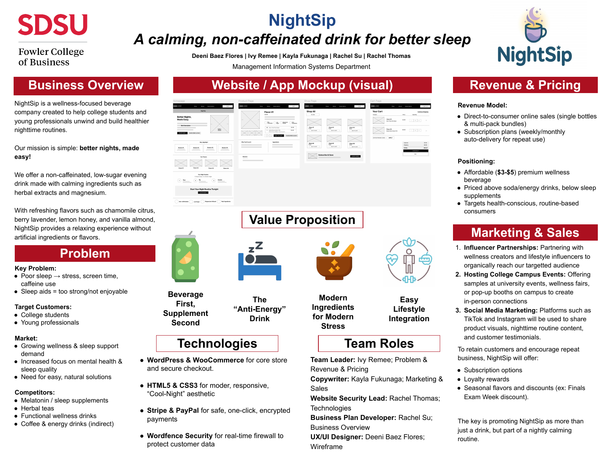

Case study · E-Business & Web Development
NightSip
NightSip is a wellness-focused beverage e-commerce concept designed to help college students and young professionals unwind and build healthier nighttime routines. Our team explored how web technologies, e-commerce functionality, and thoughtful user experience could create an approachable online shopping experience.
Website walkthrough
See the NightSip experience in action.
A short walkthrough of the e-commerce concept, website structure, navigation, and shopping experience.
Final presentation
Our NightSip project poster.
The poster our team used to present the customer problem, product concept, business strategy, and e-commerce experience.

The problem
Better nights should feel approachable.
Many college students and young professionals struggle to maintain healthy nighttime routines because of stress, screen time, and caffeine consumption. Traditional sleep aids may not appeal to everyone looking for a simple, enjoyable way to unwind.
The concept
A calmer kind of evening drink.
NightSip was envisioned as a low-sugar, non-caffeinated evening beverage made with calming ingredients such as herbal extracts and magnesium. The concept combines wellness with convenience through refreshing flavors and a product designed to fit naturally into an everyday nighttime routine.
Our value proposition
- A non-caffeinated alternative to traditional energy drinks
- An approachable wellness beverage
- Convenient online ordering
- A product concept designed around everyday routines
Bringing the idea online
An e-commerce experience designed around calm and convenience.
We explored how an e-commerce website could bring NightSip to life through strong product presentation, a straightforward shopping experience, and a calm visual identity aligned with the brand’s wellness positioning.
My role as team leader
Problem definition
Helped establish the customer problem and define the opportunity for NightSip.
Revenue & pricing strategy
Developed the proposed revenue model, including direct-to-consumer sales, multi-pack bundles, and subscription options.
Website structure
Helped plan the website blueprint and navigation, and built the Contact Desk and Shopping Cart experiences in the navigation bar.
Team coordination
Organized responsibilities, aligned contributions, and helped guide the project from concept development to presentation.
Project presentation
Communicated the business concept, value proposition, e-commerce strategy, and final recommendations.
Technology & tools
Reflection & takeaway
NightSip gave me the opportunity to explore how technology and business strategy work together when developing an e-commerce concept. Beyond understanding the role of web technologies in creating an online storefront, I gained experience coordinating a team, translating a customer problem into a business concept, and considering how pricing, product positioning, and user experience influence an online business. It also strengthened my interest in building technology-driven solutions that balance functionality with thoughtful user experiences.